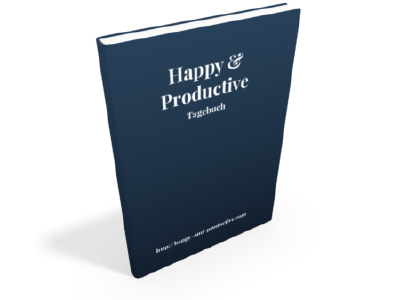

 Hast Du das Gefühl, dass die wichtigen Dinge in deinem Leben zu kurz kommen? Bist Du teilweise unzufrieden damit, dass es manche Bereiche gibt, in denen Du erstmal aufräumen willst, bevor Du den nächsten Schritt gehen kannst? Oder bist Du produktiv, aber unzufrieden? Oder zufrieden aber unproduktiv? Unser 5 Tages-Emailkurs erklärt Dir die 5 einfachen Werkzeuge, mit denen ich meine eigene Zufriedenheit und Produktivität gesteigert habe.
Ich bin Sebastian Apel, und ich denke "vielseitig" beschreibt mich ganz gut. Ich bin Programmierer, ex-Strategie-Consultant und nun seit ca. 2.5 Jahren auch Geschäftsführer meiner eigenen Firma. Insbesondere seit ich selbständig arbeite habe ich gemerkt, wie schwer es sein kann, täglich die Dinge zu tun, die mich oder die Firma voranbringen. Und wie schnell es gehen kann, dass man vor lauter Fokus auf Produktivität immer unzufriedener wird. Und da es mir wichtig ist, produktiv UND zufrieden zu sein habe ich viel Zeit investiert um herauszufinden, was für mich gut funktioniert. Eines der Ergebnisse ist das "Happy & Productive"-Tagebuch, welches ich täglich verwende, um ein Ritual zu haben, das mir hilft auf dem richtigen Weg zu bleiben.
Wichtiger als das Tagebuch sind aber die 5 Methoden und Werkzeuge, die dem Tagebuch zugrunde liegen. Und diese 5 Werkzeuge habe ich ausführlich in einem Emailkurs aufbereitet. Der Emailkurs wird sich in naher Zukunft käuflich erwerben lassen. Ein kleiner Kreis von Menschen kann bereits jetzt Zugriff auf die Lektionen, erhalten während sie entstehen.